Analyzing Northwest Atlantic Kelp with sdmTMB
Background

Background
- In 2013, we collected all extant time series of kelp abundance
- Analysis showed 1/3 of the world’s forests declining, 1/3 with no trend, 1/3 increasing
- We decided to revisit a decade later
- BUT - starting with Northwest Atlantic to build framework so that we can move on to the rest of the world more quickly
The Data
1893 points over 324 sites
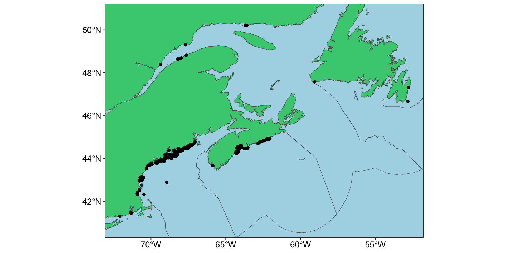
Sampling Uneven in Time
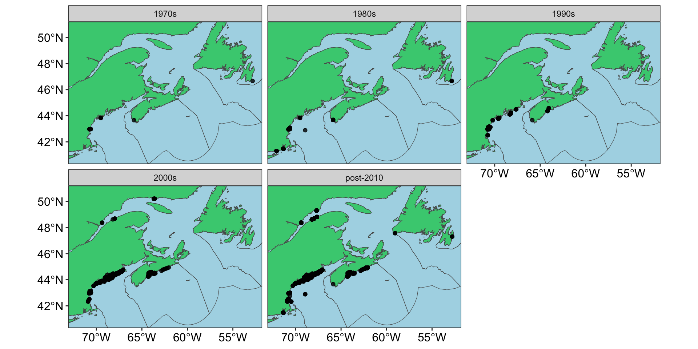
Timing and Duration of Data
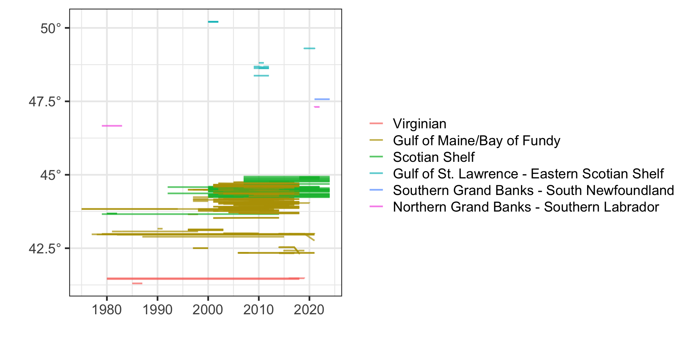
Variation in Measurement type
Standardized as \(stdkelp = Kelp_{ijt}/m_{ij}\) m = average of highest three measurement
i = ecoregion (or whole data set) j = measurement type
t = year
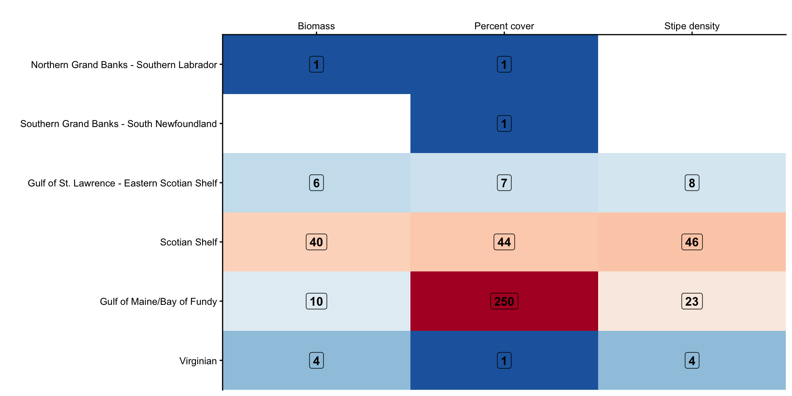
Initial Analysis
Analysis Standardized by Ecoregion
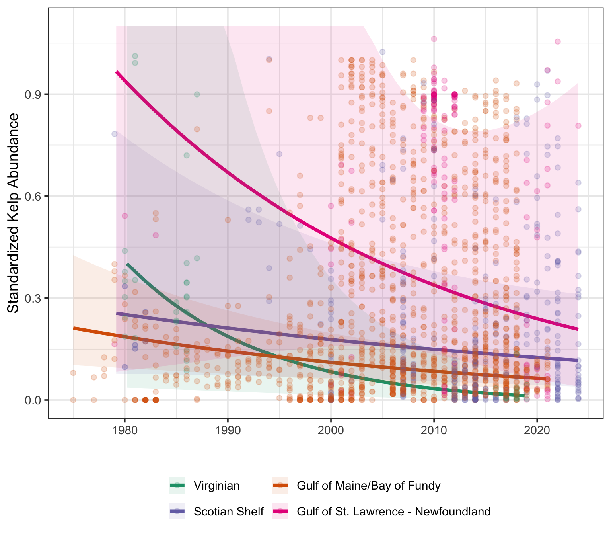
Same analysis as Krumhansl et al 2013, but with glmmTMB
Rate of change the same across collapsed ecoregions
- LRT test and AIC comparison to alt model
But What about Continuous Space?
Creating a Mesh
Working in UTM in km scale
Still feeling a bit at sea with parameters
- Should I be working with inla?Used cutoff = 10 for a fine-grained mesh - works! yes?
Also trying to use a barrier for the coastline
Creating a Mesh
Note: Results did sometimes change with a larger cutoff
The Mesh
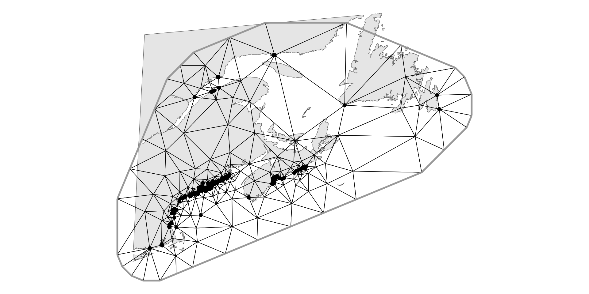
The Mesh - Way to show the cuts?
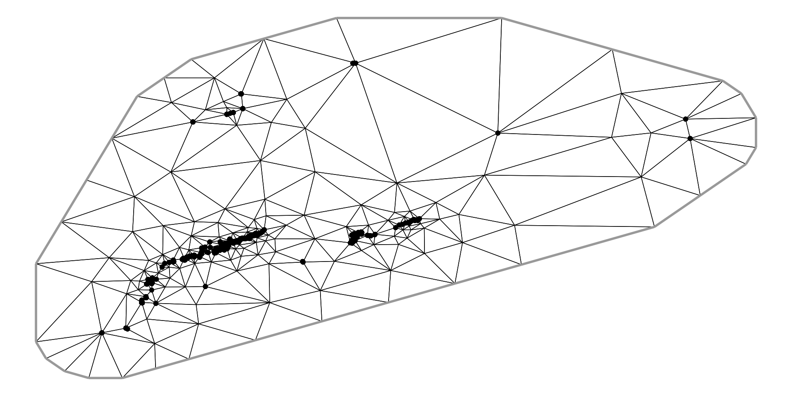
An Initial Grid for Interpolation
Areas within 40km of kmeans clusters of points
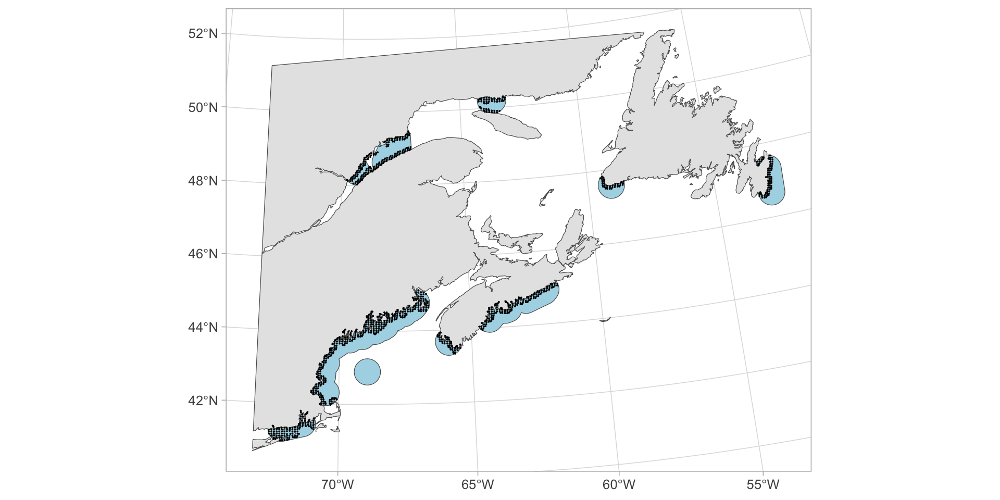
A Model of Varying Slopes
Note RE structure
One Thing I Like: Bimodality
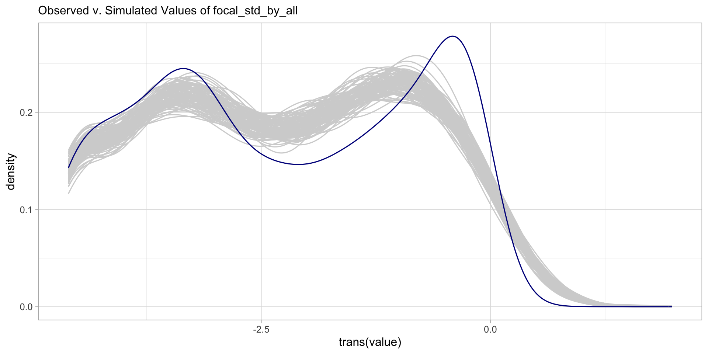
Interpretation
Reasonable? Test of slope homogeneity?
# A tibble: 7 × 6
group_name term estimate std.error conf.low conf.high
<chr> <chr> <dbl> <dbl> <dbl> <dbl>
1 <NA> range 42.3 24.7 13.5 133.
2 <NA> sigma_O 0.243 0.0963 0.111 0.528
3 <NA> sigma_Z 0.0257 0.00951 0.0124 0.0531
4 <NA> tweedie_p 1.51 0.0149 1.48 1.54
5 study sd__(Intercept) 2.08 NA 1.37 3.16
6 trajectory sd__(Intercept) 0.686 NA 0.600 0.784
7 trajectory sd__year_c 0.0446 NA 0.0330 0.0602Fits look OK
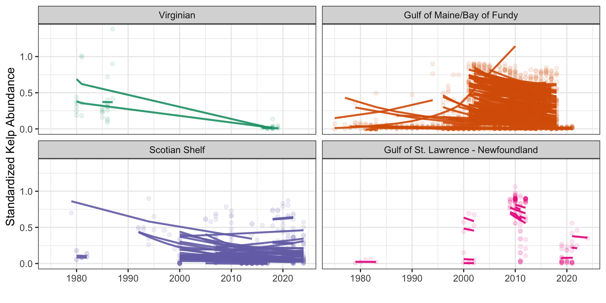
Although Surprised South isn’t Stronger…
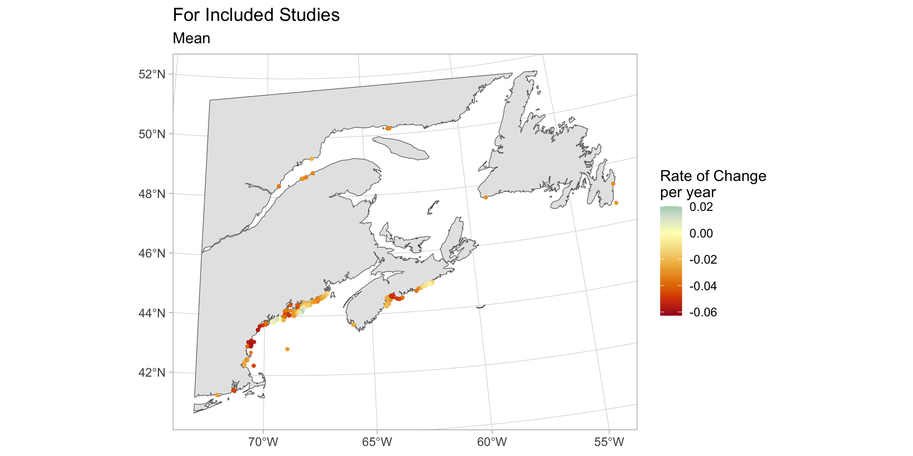
A function to get predictions and spatial variation
get_predicted_sdm_data <-
function(mod, dat = NULL,
nsim = 300, slopevar = "year_c",
lwr = 0.025, upr = 0.975){
if(is.null(dat)){
dat <- mod$data
dat$yi <- mod$tmb_data$y_i
}
# for combined variable
# from the paper
zeta_s <- predict(mod, newdata = dat,
nsim = nsim,
sims_var = "zeta_s")
sims <- spread_sims(mod, nsim = nsim)
combined <- sims[[slopevar]] + t(zeta_s)
dat$combined_slope_median <- apply(combined, 2, median)
dat$combined_slope_mean <- apply(combined, 2, mean)
dat$combined_slope_sd <- apply(combined, 2, sd)
dat$combined_slope_lwr <- apply(combined, 2, quantile,
probs = 0.025)
dat$combined_slope_upr <- apply(combined, 2, quantile,
probs = 0.975)
predict(mod, se=TRUE, newdata = dat) |>
mutate(slope_fe = coef(mod)[2],
slope_fe_se = tidy(mod)$std.error[2])
}Interpolations
- Chose a random trajectory, study, focal unit - doesn’t make a difference
pred_data <- prediction_points |>
as_tibble() |>
mutate(year_c = 0,
trajectory = nwa_dat$trajectory[1],
study = nwa_dat$study[1],
focalUnit = nwa_dat$focalUnit[1]
)
spatial_interpolate <- get_predicted_sdm_data(mod_spatial,
dat = pred_data,
lwr = 0.05, upr = 0.95, nsim = 1e3) |>
st_as_sf(crs = st_crs(coastline_32619_km)) |>
mutate(in_ci = ifelse(sign(combined_slope_mean) == sign(combined_slope_lwr) &
sign(combined_slope_mean) == sign(combined_slope_upr),
TRUE, FALSE))Properties
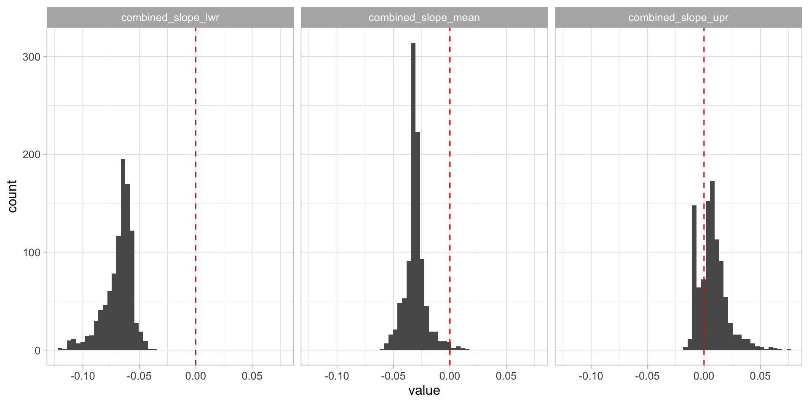
The Curves
Shifted up? Correct? Plotting est
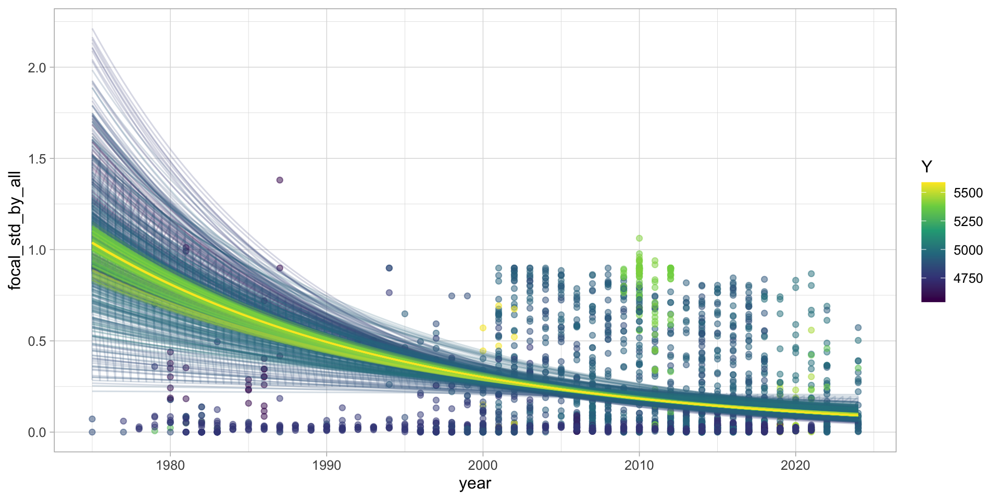
Variability in zeta_s across space
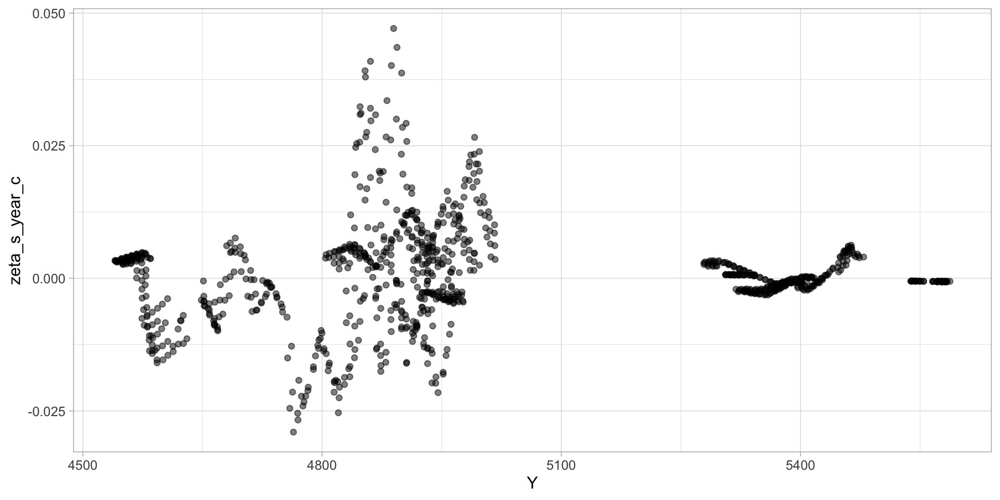
Map of Interpolations
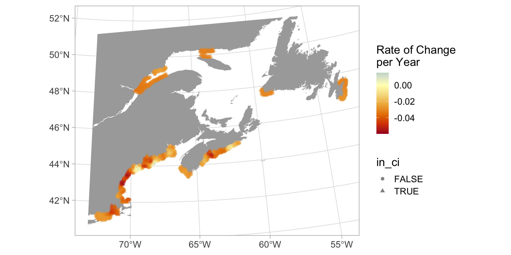
Final Thoughts on initial sdmTMB
So, this support the earlier analysis of similar slope throughout even if we are starting in different places
A little worried that there is no high change in S trend and overprediction in the 1980s - shift down?
Mesh right?
Spatio-Temporal Variation
We know that there has been urchin outbreaks, recovery, species invasions, climate change, and more in the region
GAMs seem the right way to go to examine temporal variation
But, the severity and timing of these mechanisms differ by region.
A Function to Generate Elements Needed for GAMs in sdmTMB
make_basis <- function(smooth_formula, dat, basis_prev = NULL){
sm <- sdmTMB:::parse_smoothers(smooth_formula, data = dat, basis_prev = basis_prev)
# unpenalized v. penalized part
sx <- as.data.frame(sm$Xs)
colnames(sx) <- paste0("SX", seq_len(ncol(sx)))
sz <- as.data.frame(do.call(cbind, sm$Zs))
colnames(sz) <- paste0("SZ", seq_len(ncol(sz)))
# or the whole thing
v <- as_tibble(sm$basis_out[[1]][[1]]$X)
# data with basis sets
dat <- cbind(dat, sx, sz, v)
return(list(sx = sx, sz = sz, dat = dat, sm = sm, v = v))
}Creating a smoother and basis set
Making Unpenalized Formulae
Making Unpenalized Formulae
Putting This Into sdmTMB
mod_spatiotemporal<- sdmTMB(
fe_formula_unpenalized,
spatial_varying = svc_formula_unpenalized,
dispformula = ~focalUnit,
family = tweedie(link = "log"),
spatial = "on",
mesh = mesh_coastline,
data = nwa_dat_with_basis,
control =
sdmTMBcontrol(map = list(ln_tau_Z = factor(rep(1L, ncol(nwa_basis$v)))))
)Looks OK?
# A tibble: 6 × 6
group_name term estimate std.error conf.low conf.high
<chr> <chr> <dbl> <dbl> <dbl> <dbl>
1 <NA> range 59.1 29.0 22.7 154.
2 <NA> sigma_O 0.227 0.0924 0.102 0.504
3 <NA> sigma_Z 0.432 0.0838 0.295 0.631
4 <NA> tweedie_p 1.51 0.0149 1.48 1.54
5 study sd__(Intercept) 2.54 NA 1.77 3.65
6 trajectory sd__(Intercept) 0.702 NA 0.619 0.795Fitted Values Look Good
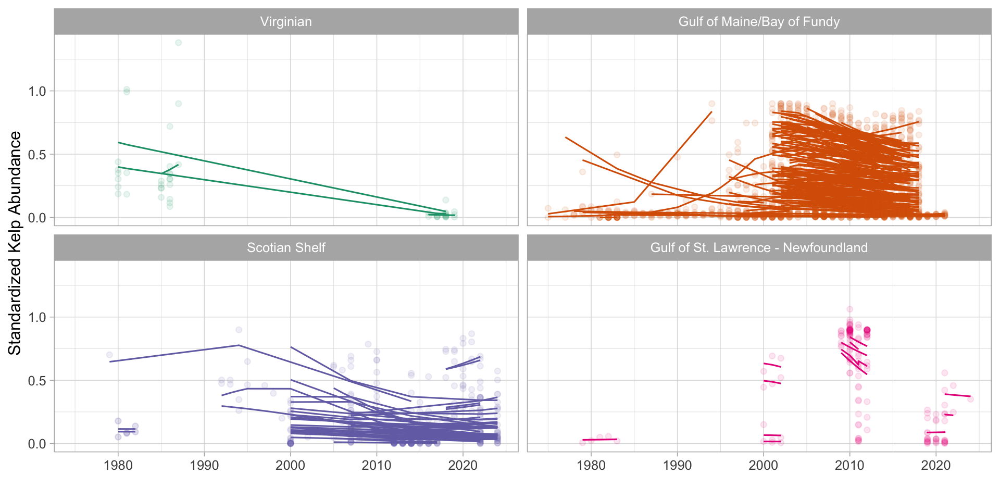
Prediction Set for Interpolation
prediction_points_yr <-
tidyr::expand_grid(prediction_points, year = seq(
min(nwa_dat_with_basis$year),
max(nwa_dat_with_basis$year),
by = 0.1
))
pred_basis <- make_basis(smooth_formula,
prediction_points_yr,
basis_prev = nwa_basis$sm)
pred_data <- pred_basis$dat |>
as_tibble() |>
mutate(
trajectory = nwa_dat_with_basis$trajectory[1],
study = nwa_dat_with_basis$study[1],
focalUnit = nwa_dat_with_basis$focalUnit[1]
)
predicted <- predict(mod_spatiotemporal,
type = "response",
newdata = pred_data)We Can See Loss and Gain
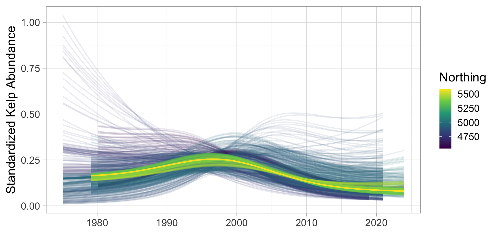
Interpolation with Data Overlay
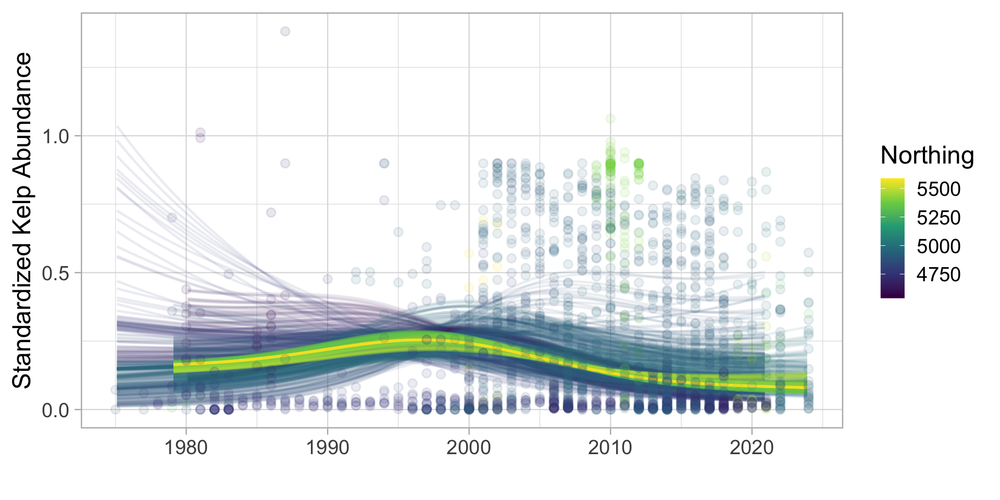
Adding Ecoregions and an Order to Cells
Hovmoller of Estimate
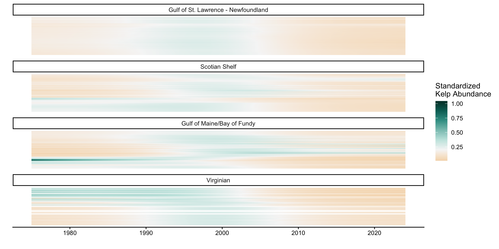
Or on a map
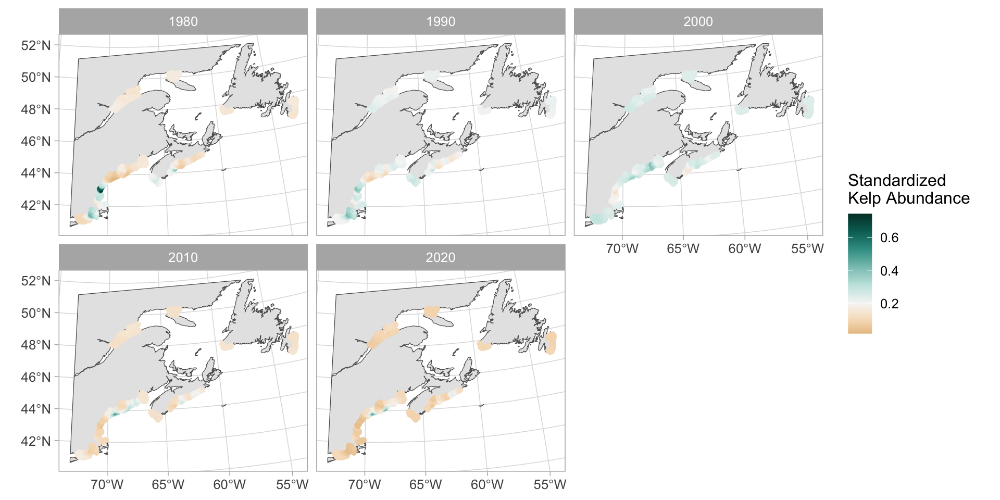
Rate of Change
Again, see the recovery
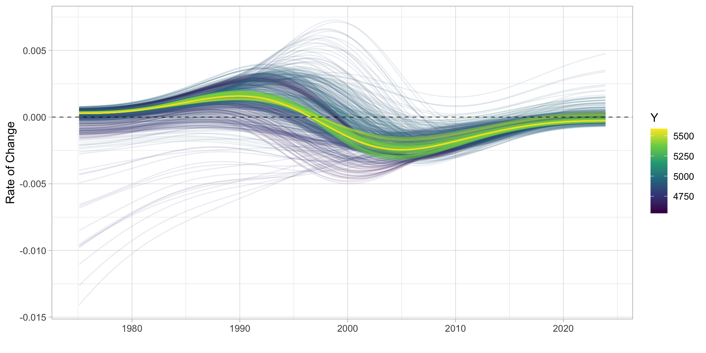
Hovmoller of Change
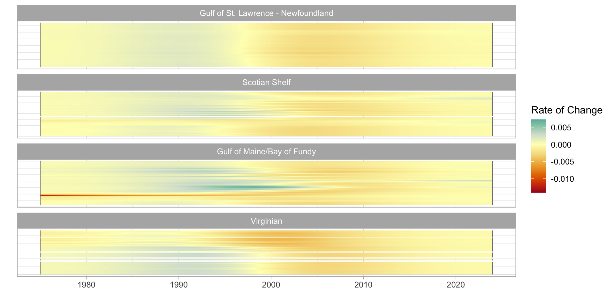
Spatial Viz of % Change Clearer
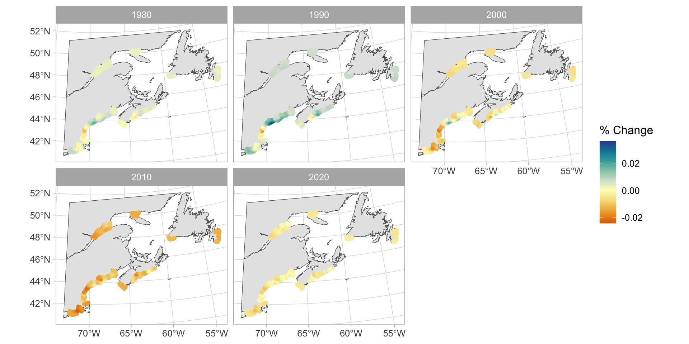
Final Thoughts on GAM sdmTMB
We see surprising uniformity in loss and recovery
Are things tuned right?
A little worried that S trend is not stronger, but, this is because here we have a spatial RE instead of a spatial FE (conversation point)
Is implementation of GAM here correct?